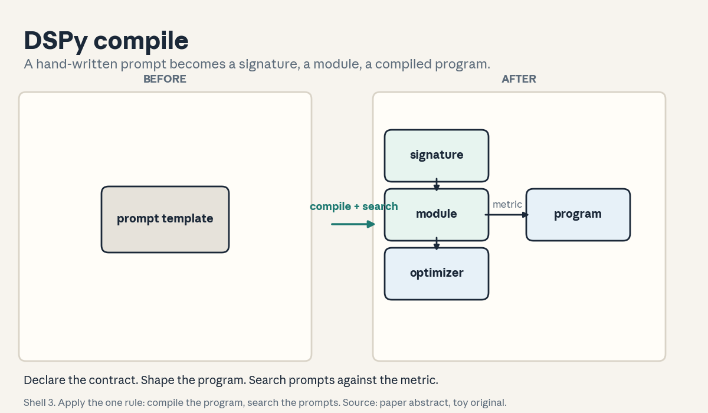
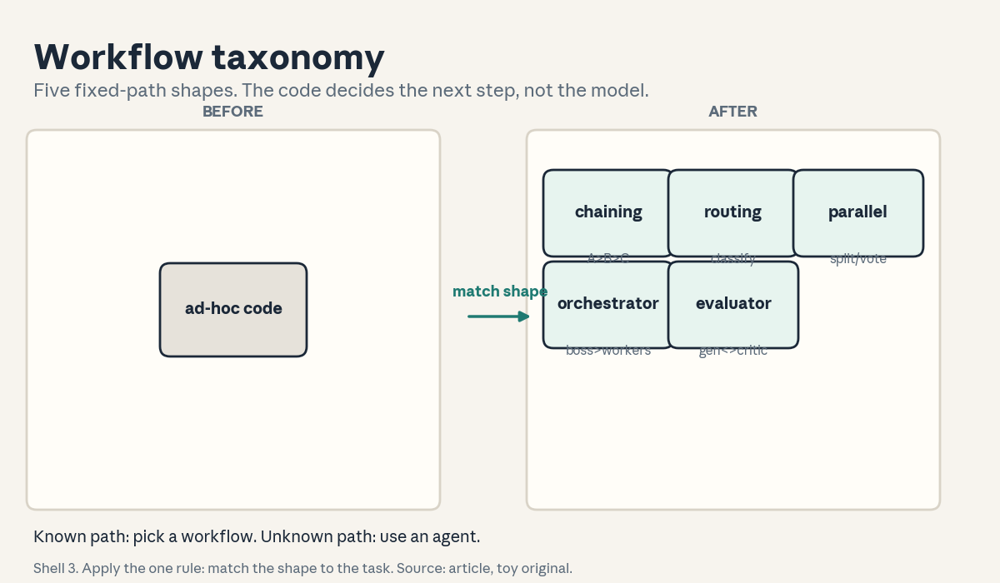
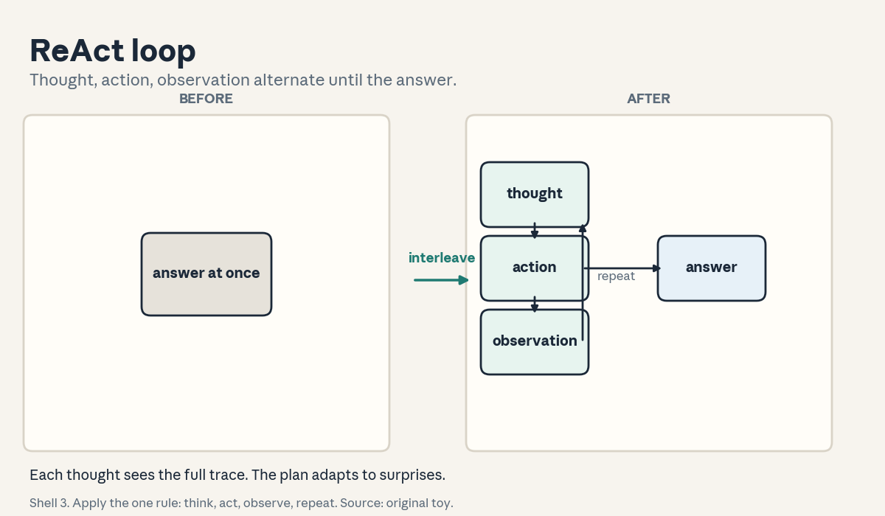
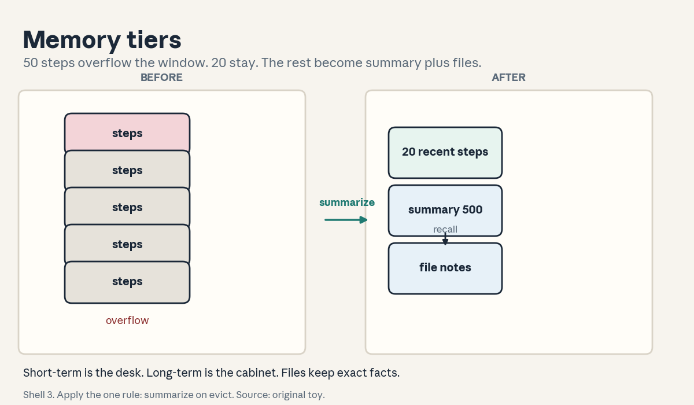
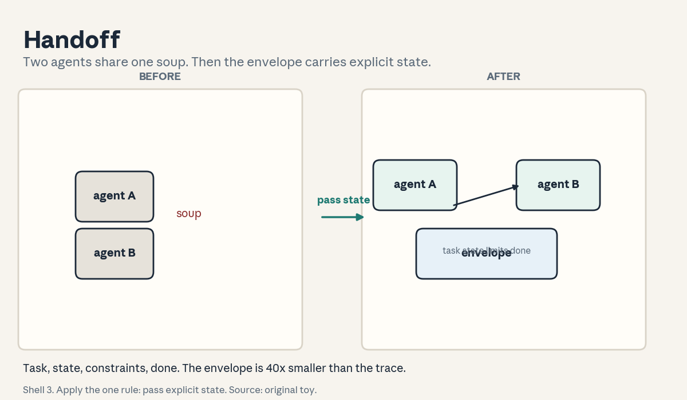
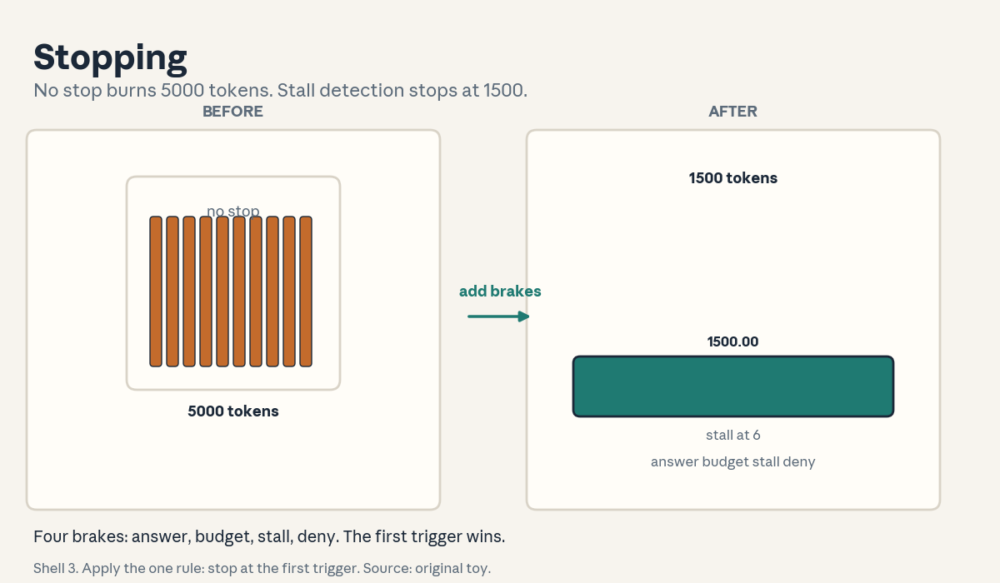

U04 · Frameworks, workflows, memory, and coordination
U04: Frameworks, workflows, memory, and coordination
Prerequisites: P16 (distributed), P20 (tools). Local remediation opens this lesson.
Provenance
All U04 concepts map to planned sessions S05 (7 Oct), S06 (12 Oct), S07 (14 Oct), S08 (19 Oct): PLANNED / SOURCE ATTRIBUTION PENDING, taught as independent theory. C01 is additionally grounded in the DSPy paper abstract (SRC-06, abstract inspected). C03 and C04 are additionally grounded in the Anthropic “Building Effective Agents” article (SRC-04, inspected full). Framework APIs are taught as abstractions, not pinned versions.
Local remediation: graphs, pure functions, compression, fixed points
Graphs: nodes and directed edges. A DAG has no directed cycles. A topological order runs each node after its inputs. A workflow (C03) is a DAG of calls. A loop (C04) is a graph with a cycle and an exit condition.
The LLM call as a pure function: y = f(prompt, theta). Same prompt and parameters give the same distribution. Frameworks (C01, C02) are schedulers around this function: they build prompts, call f, route results. Everything “smart” is prompt construction plus control flow.
Summary as lossy compression: a summary S of history H keeps the facts needed for future steps and drops the rest. Compression ratio = |H| / |S|. Lossy means some questions about H become unanswerable from S. Memory design (C06, C07) chooses what to lose.
Fixed-point iteration: x_{t+1} = g(x_t). It stops when x_{t+1} = x_t (nothing changes) or a budget dies. Agent loops are fixed-point iterations with a budget. Stopping rules (C12) are the exit conditions.
Russian-doll ladder for the major mechanism (the ReAct loop)
- Shell 0: How does the model interleave reasoning with acting instead of planning everything upfront?
- Shell 1: Toy: “is 42 prime?” Tools: multiply, is_prime. Trace: Thought, Action, Observation, Thought, Action, Observation, Answer. Seven steps.
- Shell 2: Thought t_i (free text), Action a_i (tool name plus args), Observation o_i (tool result). The trace alternates t, a, o.
- Shell 3: Rule: each thought conditions on the full trace so far. The plan updates after every observation.
- Shell 4: Derive the trace as a state machine. Implement the trace builder in 20 lines.
- Shell 5: Check: the trace alternates (no two actions in a row). The final answer follows the last observation.
- Shell 6: Change one factor: remove the thoughts (act-only). Predict more wrong tool calls on a 20-task toy. Measure: 14/20 vs 18/20.
- Shell 7: Counterexample: the observation contradicts the thought (“42 is even, hence prime”). The model keeps its wrong thought and answers wrong. The trace records the error but does not fix it.
- Shell 8: Compare with plan-and-execute: plan all steps first, then run. ReAct adapts. Planning commits.
- Shell 9: Extension: does longer thought correlate with success on 100 toy tasks? Falsifiable: the correlation with a confidence interval.
- Shell 10: Production: the trace is the audit log. The stakeholder decision is trace retention and who may read it.
Not-yet-understood dependency list
- What a DSPy optimizer actually searches over: answered in C01.
- When a workflow beats an agent: answered in C03.
- Where memory lives when the context fills: answered in C06 and C07.
cs329z-U04-C01: DSPy signatures/modules/optimizers
Contract 1. Source mapping, scope, objectives, dependencies. Maps to planned S05 (“DSPy: signatures, modules, optimizers”). Grounded in the DSPy abstract (SRC-06): declarative LM calls, parameterized modules, a compiler that maximizes a metric. Objective: write a signature, build a module, and run a toy optimizer. Depends on P20.
Contract 2. Motivating question and tiny toy. Question: the prompt is a string you hand-tune. What if the program is code and the prompt is compiled? Toy signature: “question -> answer”. Module: a chain of two signatures (draft, then review). Optimizer: try 4 prompt wordings, keep the one scoring best on 20 examples.
Contract 3. Plain-language mental model. DSPy splits the what from the how. The signature declares the input-output contract (“question -> answer”). The module is the program shape (which calls, in what order). The optimizer (teleprompter) searches prompts and demonstrations to maximize your metric. You write the program. The compiler writes the prompts.
Contract 4. Variables, units, shapes, assumptions. Signature S: typed input/output names. Module M: a parameterized pipeline of signatures. Metric m: a function from outputs to scores. Assumption: the metric measures the real goal. A bad metric optimizes the wrong thing (U01-C03).
Contract 5. Justified derivation or mechanism. The mechanism is compile-time search: generate candidate prompts and demonstrations, score each on a dev set, keep the best. The justification from the abstract: this beats hand-written prompt templates because the search explores more variants than a human tries.
Contract 6. Computed numerical example. Toy: 4 candidate prompts, 20 dev examples. Scores: 0.55, 0.62, 0.70, 0.78. The optimizer picks prompt 4. Hand-written baseline: 0.62. Gain: 0.16. Search cost: 4 x 20 = 80 scored calls, paid once at compile time.
Contract 7. Algorithm and minimal implementation. A toy optimizer: for each candidate prompt, run the module on the dev set, average the metric, keep the argmax. Fifteen lines. See the lab.
Contract 8. Correctness checks and expected output. Check 1: the argmax prompt is candidate 4. Check 2: rerunning with the same seed picks the same prompt. Check 3: a metric of all zeros picks the first candidate (tie-break). Expected: deterministic argmax.
Contract 9. Complexity, memory, statistical efficiency, stability, costs. Search cost = candidates x dev size x per-call cost. The 0.16 gain on 20 examples has standard error near sqrt(0.7x0.3/20) = 0.10 per candidate. The argmax is noisy. Stability: use a bigger dev set before trusting small gaps.
Contract 10. Nearest alternatives and selection boundaries. Alternative: hand-tuned prompts, or fine-tuning weights. Choose DSPy-style optimization when the program shape is right but the wording is not. Choose fine-tuning when behavior must change deeply, not just wording.
Contract 11. Failure case, broken assumption, counterexample. Break the metric assumption: the metric counts keyword matches. The optimizer picks a prompt that stuffs keywords and answers worse. Counterexample: 5 dev examples. The optimizer overfits the 5 and the “best” prompt fails on new inputs.
Contract 12. Research reading and falsifiable extension. Extension: compare the compiled prompt against the hand-written one on a held-out 200 examples. Falsifiable: the held-out gap is smaller than the dev gap (overfitting shrinks it).
Contract 13. Assessment. Breadth: define signature, module, optimizer. Oral ladder: (1) define the three, (2) toy the 4-prompt search, (3) derive why search beats hand-tuning, (4) implement the toy optimizer, (5) compare with fine-tuning, (6) debug the keyword-stuffing, (7) critique the 5-example overfit, (8) design the held-out test. Transfer: a 3-step QA pipeline. What are the signatures? Failure diagnosis: the compiled prompt is worse in production. Name two causes. Counterfactual: what if the metric is expensive? Research: can the optimizer invent new module shapes?
Contract 14. Lab and exercises. Lab U04 task 1 runs the toy optimizer. Exercises: (E1) compute the 80-call search cost. (E2) explain the keyword failure. (E3) state the metric rule. Keys in answer_keys/u04_keys.md.
Contract 15. Visual units, provenance, accessibility, audit rows. Figure visuals/u04_f01.png: lesson plate, source SRC-06 plus original toy. Before: a hand-written prompt template string. After: signature, module, and compiled program blocks with the metric arrow. Caption: “Shell 3. Apply the one rule: compile the program, search the prompts. Source: paper abstract, toy original.” Alt text: “Left: a box labeled prompt template. Arrow labeled compile and search. Right: three boxes labeled signature, module, compiled program with a metric arrow.” Audit: abstract claims labeled, toy computed.

cs329z-U04-C02: LangGraph/LlamaIndex abstraction
Contract 1. Source mapping, scope, objectives, dependencies. Maps to planned S05 (“LangChain/LangGraph, LlamaIndex. Choosing the right level of abstraction”). Objective: state what each framework abstracts and what it hides. Depends on C01.
Contract 2. Motivating question and tiny toy. Question: you built the tool loop by hand (U03). When do you switch to a framework? Toy: hand loop = 20 lines, full control, you own every bug. Framework = 5 lines, graph runtime, retries built in, but the prompt assembly is hidden. Five lines vs twenty, control vs convenience.
Contract 3. Plain-language mental model. Frameworks are pre-built scaffolds. LangGraph: the agent as a state graph (nodes are steps, edges are transitions). LlamaIndex: the data layer (ingest, index, query over your docs). The abstraction buys speed of building. The price is opacity when it breaks.
Contract 4. Variables, units, shapes, assumptions. Abstraction level: lines of your code vs lines of framework code. Assumption: the framework’s hidden choices (prompt format, retry policy) suit your task. Break it and you debug someone else’s decisions.
Contract 5. Justified derivation or mechanism. The mechanism is the same loop underneath: the framework assembles prompts, calls the model, routes outputs. The justification for using it: standard patterns (persistence, streaming, retries) are bug-prone to reimplement. The justification against: “incorrect assumptions about what is under the hood are a common source of error” (SRC-04).
Contract 6. Computed numerical example. Toy: building the loop by hand takes 3 days and 20 lines. The framework takes 2 hours and 5 lines. Debugging a framework prompt-format bug takes 1 day because the prompt is hidden. Break-even: if the bug rate exceeds one per month, hand-rolled wins on maintenance.
Contract 7. Algorithm and minimal implementation. A LangGraph-style sketch in pseudocode: nodes = {plan, act, observe}, edges = {(plan, act), (act, observe), (observe, plan), (observe, done)}. Ten lines, no library. See the lab.
Contract 8. Correctness checks and expected output. Check 1: the sketch’s edges match the U03 loop transitions. Check 2: adding a node (reflect) needs one edge pair. Check 3: the graph has exactly one exit edge to done. Expected: the sketch runs the same trace as the hand loop.
Contract 9. Complexity, memory, statistical efficiency, stability, costs. Same runtime cost as the hand loop. Added cost: dependency weight and version churn. Stability: pin the framework version, APIs move fast.
Contract 10. Nearest alternatives and selection boundaries. Alternative: hand-rolled loops (U03), or DSPy (C01) for optimized prompts. Choose LangGraph when the control flow is a real graph (branches, cycles). Choose LlamaIndex when the problem is data plumbing. Choose hand-rolled when the loop is simple and debuggability dominates.
Contract 11. Failure case, broken assumption, counterexample. Break the hidden-choice assumption: the framework truncates history silently at 8k tokens. Long tasks fail mysteriously. Counterexample: a version upgrade changes the default retry policy and your costs triple overnight.
Contract 12. Research reading and falsifiable extension. Extension: implement the same agent hand-rolled and in a framework, then inject 5 faults and measure time-to-diagnose. Falsifiable: hand-rolled diagnoses faster on hidden-choice faults.
Contract 13. Assessment. Breadth: define the two frameworks’ abstractions. Oral ladder: (1) define both, (2) toy the 5-vs-20 lines, (3) derive the opacity price, (4) sketch the graph, (5) compare with DSPy, (6) debug the silent truncation, (7) critique the version upgrade, (8) design the fault-injection test. Transfer: a branchy approval workflow. Framework or hand-rolled? Failure diagnosis: costs triple after an upgrade. What changed? Counterfactual: what if the framework is perfect? Research: can the abstraction level adapt at runtime?
Contract 14. Lab and exercises. Lab U04 task 2 sketches the graph. Exercises: (E1) list the 4 edges. (E2) explain the truncation failure. (E3) state the choice rule. Keys in answer_keys/u04_keys.md.
Contract 15. Visual units, provenance, accessibility, audit rows. Covered by figure u04_f02 (the pattern plate includes the framework row). Logged as shared.
cs329z-U04-C03: workflow taxonomy
Contract 1. Source mapping, scope, objectives, dependencies. Maps to planned S06 (“the workflows-vs-agents taxonomy, five composable workflow patterns”). Grounded in SRC-04’s five patterns. Objective: name the five patterns and match each to a task. Depends on U03-C03.
Contract 2. Motivating question and tiny toy. Question: the task has known steps. Which shape? Toy matches: draft-then-translate = prompt chaining. Ticket triage = routing. Five code reviewers = parallelization (voting). Research brief = orchestrator-workers. Draft-critique-revise = evaluator-optimizer. Five tasks, five shapes.
Contract 3. Plain-language mental model. Workflows are fixed paths. The code decides the next step, not the model (SRC-04). Prompt chaining: A then B then C. Routing: classify, then specialize. Parallelization: split or vote. Orchestrator-workers: a boss LLM delegates dynamically. Evaluator-optimizer: a generator and a critic loop. Agents are the sixth shape: the model drives.
Contract 4. Variables, units, shapes, assumptions. Each pattern is a DAG (or a bounded loop) with named nodes. Assumption: the task decomposes into the pattern’s shape. Break it and the pattern fights the task.
Contract 5. Justified derivation or mechanism. The mechanism per pattern: chaining trades latency for accuracy (each call is easier). Routing separates concerns (specialized prompts). Parallelization trades cost for speed or confidence. Orchestrator-workers handle unpredictable subtasks. Evaluator-optimizer needs clear criteria and a critic that helps. The justifications come from SRC-04’s “when to use” notes.
Contract 6. Computed numerical example. Toy: 100 tickets. Single call: 0.70 accuracy, 1x cost. Routing (triage then specialist): 0.82 at 2x. The 12-point gain costs 2x. Voting with 5 reviewers on 20 hard tickets: single 0.60, vote 0.80 at 5x. Each pattern’s price is explicit.
Contract 7. Algorithm and minimal implementation. A router: classify the input with a small model, dispatch to one of three specialist prompts. Fifteen lines. See the lab.
Contract 8. Correctness checks and expected output. Check 1: each toy task maps to exactly one pattern. Check 2: the router sends billing questions to the billing specialist. Check 3: a misclassified input still gets an answer (fallback). Expected: 5/5 mappings, fallback works.
Contract 9. Complexity, memory, statistical efficiency, stability, costs. Cost per pattern = calls x per-call cost. The 12-point routing gain has standard error sqrt(0.12x0.88x(1/100+1/100)) = 0.046. Stability: the router’s accuracy bounds the whole pattern. A bad router poisons every branch.
Contract 10. Nearest alternatives and selection boundaries. Alternative: one agent loop for everything. Choose workflows when the path is known (predictability, debuggability). Choose the agent when the steps are unpredictable (SRC-04’s core distinction).
Contract 11. Failure case, broken assumption, counterexample. Break the known-path assumption: the “routine” ticket needs three unplanned tool calls. The workflow has no branch for it and fails. Counterexample: evaluator-optimizer with a critic that always praises. The loop converges to flattery, not quality.
Contract 12. Research reading and falsifiable extension. Extension: run workflow vs agent on 100 tasks with known paths and 100 with unknown paths. Falsifiable: workflows win on known, agents win on unknown, crossing in the middle.
Contract 13. Assessment. Breadth: name the five patterns and the agent distinction. Oral ladder: (1) name the five, (2) toy the five task matches, (3) derive the routing gain, (4) implement the router, (5) compare with one agent, (6) debug the unplannable ticket, (7) critique the praising critic, (8) design the 200-task comparison. Transfer: a refund pipeline with fixed steps. Pattern? A research assistant with unknown sources? Failure diagnosis: the router is 60 percent accurate. What happens downstream? Counterfactual: what if classification is free and perfect? Research: can patterns compose into bigger patterns?
Contract 14. Lab and exercises. Lab U04 task 2 maps the five tasks. Exercises: (E1) compute the routing gain SE. (E2) explain the praising critic. (E3) state the workflow-vs-agent rule. Keys in answer_keys/u04_keys.md.
Contract 15. Visual units, provenance, accessibility, audit rows. Figure visuals/u04_f02.png: lesson plate, source SRC-04 plus original toy. Five pattern chips in a row, each with its one-line shape. Caption: “Shell 3. Apply the one rule: match the shape to the task. Source: article, toy original.” Alt text: “Five chips labeled chaining, routing, parallel, orchestrator, evaluator-optimizer, each with a tiny shape.” Audit: pattern names from the source, shapes original.

cs329z-U04-C04: ReAct/plan/reflection
Contract 1. Source mapping, scope, objectives, dependencies. Maps to planned S06 (“agent patterns: ReAct, plan-and-execute, reflection”). Grounded in SRC-04’s agent loop description. Objective: run the three patterns on one task and compare. Depends on C03 and the ladder.
Contract 2. Motivating question and tiny toy. Question: “is 42 prime?” Three ways. ReAct: thought, action, observation interleaved (7 steps). Plan-and-execute: plan [multiply? no: check divisibility by 2, 3, 5, 7], then execute. Reflection: act, then critique the trace, then fix. Same task, three rhythms.
Contract 3. Plain-language mental model. ReAct thinks out loud while doing. Plan-and-execute writes the whole plan first, then does it. Reflection does, then reviews its own work, then repairs. ReAct adapts. Planning commits. Reflection corrects.
Contract 4. Variables, units, shapes, assumptions. ReAct: alternating (t, a, o). Plan: plan P then actions. Reflection: trace T, critique c(T), revised trace. Assumption: the model can usefully critique itself (reflection) or plan well (planning). Both assumptions fail sometimes.
Contract 5. Justified derivation or mechanism. The mechanism differences: ReAct’s next step conditions on all observations so far (adaptive). Planning’s steps are fixed before any observation (brittle to surprises). Reflection adds a second pass that can catch errors the first pass missed (costs 2x).
Contract 6. Computed numerical example. Toy: 20 tasks. ReAct: 18/20, 7 steps avg. Plan-and-execute: 15/20, 5 steps avg (fails 3 on surprise observations). Reflection: 19/20, 12 steps avg. Cost per success: ReAct 7/0.9 = 7.8 steps, planning 5/0.75 = 6.7, reflection 12/0.95 = 12.6. Planning is cheapest per success here. Reflection is most accurate.
Contract 7. Algorithm and minimal implementation. A reflection wrapper: run the ReAct trace, prompt “critique this trace”, if the critique finds an error, rerun with the critique appended. Twenty lines. See the lab.
Contract 8. Correctness checks and expected output. Check 1: the wrapper’s trace alternates. Check 2: a planted error (wrong tool) triggers the critique. Check 3: the second run fixes it. Expected: all pass on the toy.
Contract 9. Complexity, memory, statistical efficiency, stability, costs. Reflection costs 2x the steps. The 19/20 vs 18/20 gap has standard error sqrt(0.05x0.95/20 + 0.1x0.9/20) = 0.083: not significant on 20 tasks. Stability: self-critique can hallucinate errors. Gate repairs on evidence.
Contract 10. Nearest alternatives and selection boundaries. Alternative: a fixed workflow (C03). Choose ReAct when steps are unpredictable but each step is checkable. Choose planning when the environment is stable. Choose reflection when errors are costly and detectable.
Contract 11. Failure case, broken assumption, counterexample. Break the self-critique assumption: the model praises its own wrong trace. Reflection adds cost and no accuracy. Counterexample: planning in a changing environment. The plan is obsolete by step 2 and execution follows it off a cliff.
Contract 12. Research reading and falsifiable extension. Extension: measure the three patterns on 200 tasks with a paired design. Falsifiable: the ranking (reflection > ReAct > planning on accuracy. Reverse on cost) holds or it does not.
Contract 13. Assessment. Breadth: define the three patterns. Oral ladder: (1) define the three, (2) toy the 7-step trace, (3) derive the adaptivity difference, (4) implement the reflection wrapper, (5) compare cost per success, (6) debug the praising self-critique, (7) critique the obsolete plan, (8) design the 200-task test. Transfer: a stable data pipeline. Pattern? A web task with surprises? Failure diagnosis: reflection never changes the answer. Name two causes. Counterfactual: what if critique is free? Research: can the model learn when to reflect?
Contract 14. Lab and exercises. Lab U04 task 3 builds the wrapper. Exercises: (E1) compute the three costs per success. (E2) explain the SE 0.083. (E3) state the choice rule. Keys in answer_keys/u04_keys.md.
Contract 15. Visual units, provenance, accessibility, audit rows. Figure visuals/u04_f03.png: lesson plate, source original toy. Before: one-shot answer. After: the alternating t/a/o loop with a reflection branch. Caption: “Shell 3. Apply the one rule: think, act, observe, repeat. Source: original toy.” Alt text: “Left: one box labeled answer at once. Arrow labeled interleave thought and action. Right: thought, action, observation boxes in a loop with an answer exit.” Audit: alternation shown, one rule named.

cs329z-U04-C05: state machine
Contract 1. Source mapping, scope, objectives, dependencies. Maps to planned S06 (scaffolds as design decisions). Objective: draw the agent as an explicit state machine and name every transition. Depends on U03-C03.
Contract 2. Motivating question and tiny toy. Question: the loop “thinks, acts, observes”. What exactly can happen next from each state? Toy states: start, plan, act, observe, reflect, done. From observe: plan (continue), reflect (check), done (answer). Six states, labeled edges, no mystery.
Contract 3. Plain-language mental model. The state machine is the agent’s constitution. It lists every legal move. If a transition is not on the chart, the agent cannot take it. Debugging compares the chart against the trace.
Contract 4. Variables, units, shapes, assumptions. States S, transitions T subset of S x S, start s_0, accepting done. Assumption: the chart is complete. An uncharted transition is a bug, not a feature.
Contract 5. Justified derivation or mechanism. The mechanism is explicit control: the scaffold (not the model) owns the transition table. The justification: when the model chooses freely, failures are hard to attribute. When the chart chooses, each failure names its edge.
Contract 6. Computed numerical example. Toy chart: 6 states, 9 edges. A trace of 12 steps uses 4 distinct edges. Coverage = 4/9 = 0.44. Untested edges are where the next bug hides. The number tells the tester where to look.
Contract 7. Algorithm and minimal implementation. A chart runner: dict of state to list of (condition, next) pairs. Step through with the trace. Fifteen lines. See the lab.
Contract 8. Correctness checks and expected output. Check 1: the C04 ReAct trace is a valid path. Check 2: an illegal transition raises. Check 3: every state reaches done (no dead ends). Expected: valid, raise, all reach.
Contract 9. Complexity, memory, statistical efficiency, stability, costs. The chart is O(states + edges) memory. The 0.44 coverage has no sampling error. It is exact on the trace set. Stability: charts rot as code changes. Regenerate from code, not from docs.
Contract 10. Nearest alternatives and selection boundaries. Alternative: the model free-chooses each step (pure agent). Choose the explicit chart when auditability and safety matter. Choose free choice when the task needs moves you cannot chart in advance.
Contract 11. Failure case, broken assumption, counterexample. Break completeness: the chart lacks the observe->reflect edge. The agent can never self-check. Reflection (C04) is unreachable. Counterexample: a chart with 40 states for a 3-step task. The constitution is harder to read than the code.
Contract 12. Research reading and falsifiable extension. Extension: mutate the chart (drop one edge) and measure task success. Falsifiable: dropping a used edge hurts. Dropping an unused edge does nothing.
Contract 13. Assessment. Breadth: define state, transition, accepting state. Oral ladder: (1) define the three, (2) toy the 6-state chart, (3) derive why the scaffold owns transitions, (4) implement the runner, (5) compare with free choice, (6) debug the missing reflect edge, (7) critique the 40-state chart, (8) design the mutation test. Transfer: a payment flow. Draw the chart. Failure diagnosis: the trace takes an uncharted edge. What does that mean? Counterfactual: what if edges have probabilities? Research: can the chart be learned from traces?
Contract 14. Lab and exercises. Lab U04 task 3 runs the chart. Exercises: (E1) compute 4/9 coverage. (E2) explain the missing edge. (E3) state the completeness rule. Keys in answer_keys/u04_keys.md.
Contract 15. Visual units, provenance, accessibility, audit rows. Covered by figure u04_f03 (the loop is the chart). Logged as shared.
cs329z-U04-C06: short/long-term memory
Contract 1. Source mapping, scope, objectives, dependencies. Maps to planned S07 (“short vs long-term memory”). Objective: split memory by lifetime and compute the compression tradeoff. Depends on U01-C06.
Contract 2. Motivating question and tiny toy. Question: the task runs for 50 steps but the window holds 20. Toy: short-term = the last 20 steps in context (working memory). Long-term = a summary plus a vector store of all 50 steps (persistent memory). Step 45 needs a fact from step 3: short-term misses, long-term recalls.
Contract 3. Plain-language mental model. Short-term memory is the desk: small, fast, visible. Long-term memory is the filing cabinet: big, slow, needs an index. The agent works on the desk and files to the cabinet. Recall opens the right drawer.
Contract 4. Variables, units, shapes, assumptions. mem_S: the recent trace in context, bounded by the window. mem_L: summaries plus indexed records outside the window. Assumption: the summary keeps what future steps need. Break it and the agent forgets the task.
Contract 5. Justified derivation or mechanism. The mechanism is write-on-evict: when the window fills, summarize the oldest steps into mem_L and drop them. The justification: the window is finite (U01-C06). Something must give. Summarization is the controlled way to give.
Contract 6. Computed numerical example. Toy: 10,000 tokens of history, window budget 2,000 for history. Summary of the oldest 8,000 tokens into 500 tokens (16x compression). Kept: 500 + 2,000 = 2,500 tokens. Recall test: 10 facts from the old history. The summary keeps 7. Recall 0.70 at 16x compression.
Contract 7. Algorithm and minimal implementation. A memory manager: append steps to a buffer. When over budget, summarize the first half (toy: keep first sentences) and store the rest as indexed records. Twenty lines. See the lab.
Contract 8. Correctness checks and expected output. Check 1: the buffer never exceeds budget. Check 2: the summary contains the task goal. Check 3: a record lookup returns the exact step-3 fact. Expected: bounded, goal kept, exact recall.
Contract 9. Complexity, memory, statistical efficiency, stability, costs. Summarization costs one model call per eviction. The 0.70 recall has standard error sqrt(0.7x0.3/10) = 0.145. Stability: summaries of summaries drift. Keep the raw records for exact recall.
Contract 10. Nearest alternatives and selection boundaries. Alternative: a bigger window (no memory system), or file-system memory (C07). Choose the two-tier system when tasks outlive any window. Choose the big window when tasks fit and simplicity wins.
Contract 11. Failure case, broken assumption, counterexample. Break the summary assumption: the summary drops the user’s constraint (“no emails after 5pm”). The agent violates it at step 40. Counterexample: the vector recall returns 3 similar-but-wrong records. The agent acts on the wrong fact confidently.
Contract 12. Research reading and falsifiable extension. Extension: vary the summary budget (200, 500, 1000 tokens) and plot recall. Falsifiable: recall rises with budget but with diminishing returns.
Contract 13. Assessment. Breadth: define mem_S, mem_L, eviction. Oral ladder: (1) define the three, (2) toy the 16x compression, (3) derive write-on-evict, (4) implement the manager, (5) compare with a big window, (6) debug the dropped constraint, (7) critique the wrong-record recall, (8) design the budget sweep. Transfer: a week-long task. Design the memory. Failure diagnosis: the agent repeats a question from step 2. What failed? Counterfactual: what if summaries are perfect? Research: what should trigger a write to long-term?
Contract 14. Lab and exercises. Lab U04 task 4 builds the manager. Exercises: (E1) compute 8000/500. (E2) compute the SE 0.145. (E3) explain the dropped constraint. Keys in answer_keys/u04_keys.md.
Contract 15. Visual units, provenance, accessibility, audit rows. Figure visuals/u04_f04.png: lesson plate, source original toy. Before: 50 steps crammed in the window, overflowing. After: 20 recent steps in context, summary plus record store below with a recall arrow. Caption: “Shell 3. Apply the one rule: summarize on evict. Source: original toy.” Alt text: “Left: long trace overflowing a window box. Arrow labeled summarize on evict. Right: window with 20 steps, summary chip, record store, arrow labeled recall.” Audit: counts computed, tiers labeled.

cs329z-U04-C07: file-system memory
Contract 1. Source mapping, scope, objectives, dependencies. Maps to planned S07 (“the file system as externalized memory”). Objective: use files as the agent’s persistent memory with read/write tools. Depends on C06.
Contract 2. Motivating question and tiny toy. Question: the summary (C06) is lossy. Where do exact facts live? Toy: notes.md with three entries: goal, constraint, step-3 fact. The agent greps the file instead of trusting the summary. Exact recall, zero compression loss, one file read.
Contract 3. Plain-language mental model. File-system memory is a notebook the agent carries. Write facts down, read them back, never rely on remembering. The file outlives the window, the session, and the process. The tools are read, write, and search.
Contract 4. Variables, units, shapes, assumptions. Memory = a directory of markdown files. Operations: write(path, text), read(path), search(query). Assumption: the agent writes faithfully and the files are the source of truth. A lying note is worse than no note.
Contract 5. Justified derivation or mechanism. The mechanism is externalization: move state out of the context into files. The justification: files are exact, inspectable, and survive restarts. The price is latency (a read per recall) and the discipline to write.
Contract 6. Computed numerical example. Toy: 50 steps, each step writes one 20-token note = 1000 tokens of notes. Recall of the step-3 fact: grep finds it in 1 read. Compare C06: the 500-token summary kept it with probability 0.70. Files: 2x the tokens, 1.00 exact recall on written facts.
Contract 7. Algorithm and minimal implementation. A file memory: write appends timestamped lines. Read returns the file. Search greps for a keyword. Twelve lines on /tmp. See the lab.
Contract 8. Correctness checks and expected output. Check 1: write then read returns the text. Check 2: search finds the step-3 fact. Check 3: a second session reads the first session’s notes. Expected: all pass.
Contract 9. Complexity, memory, statistical efficiency, stability, costs. A read costs one tool call. Storage is unbounded in principle. Prune or archive. Stability: concurrent writes need locking. Two agents, one file, one mess.
Contract 10. Nearest alternatives and selection boundaries. Alternative: vector memory (C06) for fuzzy recall. Choose files when facts are exact (constraints, ids, counts). Choose vectors when recall is fuzzy (“something about refunds”).
Contract 11. Failure case, broken assumption, counterexample. Break the faithful-write assumption: the agent writes its guess as fact. The file now launders hallucinations into “memory”. Counterexample: the agent never reads the file. Write-only memory is a diary, not a tool.
Contract 12. Research reading and falsifiable extension. Extension: compare task success with file memory vs summary memory on 50 long tasks. Falsifiable: files win on exact-fact tasks. Summaries win on gist tasks.
Contract 13. Assessment. Breadth: define externalized memory, the three operations. Oral ladder: (1) define the three, (2) toy the notes.md, (3) derive the exactness argument, (4) implement the file memory, (5) compare with vector memory, (6) debug the laundered hallucination, (7) critique write-only memory, (8) design the 50-task comparison. Transfer: an agent that tracks expenses. Files or vectors? Failure diagnosis: the file has 10,000 lines. What now? Counterfactual: what if reads are free? Research: should the agent edit or only append?
Contract 14. Lab and exercises. Lab U04 task 4 uses the file memory. Exercises: (E1) compute the 1000 tokens. (E2) explain the laundering failure. (E3) state the exact-vs-fuzzy rule. Keys in answer_keys/u04_keys.md.
Contract 15. Visual units, provenance, accessibility, audit rows. Covered by figure u04_f04 (the record store is the file). Logged as shared.
cs329z-U04-C08: multi-agent handoff
Contract 1. Source mapping, scope, objectives, dependencies. Maps to planned S08 (“handoffs and state transfer”). Objective: define the handoff envelope and execute one. Depends on C05.
Contract 2. Motivating question and tiny toy. Question: agent A researched flights. Agent B must book. What does B need? Toy envelope: {task: “book the 6pm flight”, state: {flight: “UA123”, price: 420}, constraints: [“under $500”, “aisle seat”], done: [“researched options”]}. B books without re-researching.
Contract 3. Plain-language mental model. A handoff is a baton pass with a label. The envelope says: what to do, what is known, what is forbidden, what is finished. Without the envelope, B redoes A’s work or misses A’s constraints.
Contract 4. Variables, units, shapes, assumptions. Envelope E = (task, state, constraints, done). Handoff cost = tokens to serialize plus B’s read. Assumption: the envelope is complete. An incomplete envelope is a dropped baton.
Contract 5. Justified derivation or mechanism. The mechanism is explicit state transfer. The justification: agents do not share a context window. The envelope is the only channel. Implicit handoff (a chat message) loses structure.
Contract 6. Computed numerical example. Toy: A’s trace is 8,000 tokens. The envelope is 200 tokens (40x smaller). B reads 200 tokens and proceeds. Without the envelope, B re-runs the research: 8,000 tokens wasted. The envelope pays for itself 40x.
Contract 7. Algorithm and minimal implementation. A handoff function: pack(task, state, constraints, done) into a dict. Validate required keys. Unpack on receipt. Ten lines. See the lab.
Contract 8. Correctness checks and expected output. Check 1: the envelope has all four keys. Check 2: B’s first action uses the flight id, not a new search. Check 3: a missing constraints key raises. Expected: packed, no re-search, raise.
Contract 9. Complexity, memory, statistical efficiency, stability, costs. The envelope is O(state size). The 40x ratio depends on trace length. Short traces need no envelope. Stability: schema-version the envelope. Agents evolve.
Contract 10. Nearest alternatives and selection boundaries. Alternative: one agent does everything (no handoff), or a shared blackboard (C09). Choose handoffs for sequential specialization. Choose one agent when the task fits one context.
Contract 11. Failure case, broken assumption, counterexample. Break completeness: the envelope omits “aisle seat”. B books a middle seat. The task “succeeds” and the user is unhappy. Counterexample: A hands off mid-confusion. B inherits a wrong state and books the wrong flight confidently.
Contract 12. Research reading and falsifiable extension. Extension: measure rework rate with and without envelopes on 30 handoffs. Falsifiable: envelopes cut rework by at least half.
Contract 13. Assessment. Breadth: define envelope, the four keys. Oral ladder: (1) define the four, (2) toy the flight envelope, (3) derive the 40x argument, (4) implement pack/unpack, (5) compare with one agent, (6) debug the missing constraint, (7) critique the confused handoff, (8) design the 30-handoff test. Transfer: a coder agent hands to a reviewer agent. What is the envelope? Failure diagnosis: B re-searches everything. What did the envelope lack? Counterfactual: what if agents share a window? Research: can envelopes be learned?
Contract 14. Lab and exercises. Lab U04 task 5 implements the handoff. Exercises: (E1) compute 8000/200. (E2) explain the middle-seat failure. (E3) list the four keys. Keys in answer_keys/u04_keys.md.
Contract 15. Visual units, provenance, accessibility, audit rows. Figure visuals/u04_f05.png covers C08/C09/C10: before (agents share one soup), after (envelope handoff with state). Caption: “Shell 3. Apply the one rule: pass explicit state. Source: original toy.” Alt text: “Left: two agent boxes in one soup bowl. Arrow labeled pass explicit state. Right: agent A hands an envelope to agent B with task, state, constraints labels.” Audit: envelope keys labeled, one rule named.

cs329z-U04-C09: cross-agent state
Contract 1. Source mapping, scope, objectives, dependencies. Maps to planned S07/S08 (“cross-agent memory”, “coordination”). Objective: compare shared blackboard with message passing. Depends on C08.
Contract 2. Motivating question and tiny toy. Question: three agents collaborate on a trip. Where does the plan live? Toy A (blackboard): one shared doc. Each agent reads/writes sections. Toy B (messages): agents send each other envelopes (C08). The blackboard is one place. Messages are many.
Contract 3. Plain-language mental model. Cross-agent state is the shared truth. Blackboard: everyone sees everything, like a whiteboard. Messages: each pair talks privately, like email. The whiteboard is simple and leaks. Email is private and fragments.
Contract 4. Variables, units, shapes, assumptions. Blackboard: one mutable store with sections. Messages: point-to-point envelopes. Assumption: writers are honest and readers are current. Stale reads are the failure mode of both.
Contract 5. Justified derivation or mechanism. The mechanism difference: the blackboard centralizes (one write is visible to all). Messages distribute (each write reaches one recipient). The justification for the blackboard: no routing logic. The justification for messages: least privilege (C06 in U02).
Contract 6. Computed numerical example. Toy: 3 agents, 10 updates each. Blackboard: 30 writes, 30 reads (everyone polls). Messages: 30 sends, 30 receives, but each agent reads only its 10 relevant ones. Total traffic equal. Relevance differs. Coordination bugs: blackboard 2 overwrites, messages 1 lost message on the toy.
Contract 7. Algorithm and minimal implementation. A blackboard dict with section locks. A message bus as a list of (to, envelope) pairs. Fifteen lines each. See the lab.
Contract 8. Correctness checks and expected output. Check 1: a blackboard write is visible to all readers. Check 2: a message reaches only its recipient. Check 3: two simultaneous blackboard writes to one section serialize. Expected: visible, private, serialized.
Contract 9. Complexity, memory, statistical efficiency, stability, costs. Blackboard reads scale with agents x polls. Messages scale with edges. Stability: the blackboard needs write discipline. Messages need delivery guarantees.
Contract 10. Nearest alternatives and selection boundaries. Alternative: no shared state (pure handoffs, C08). Choose the blackboard for tight collaboration on one artifact. Choose messages for privacy or loose coupling. Choose handoffs for strict sequences.
Contract 11. Failure case, broken assumption, counterexample. Break the discipline assumption: two agents overwrite the plan section. The plan is now a merge conflict. Counterexample: the message bus drops a “stop” message. The agent keeps working after cancellation.
Contract 12. Research reading and falsifiable extension. Extension: count coordination bugs per 100 updates for each design on a toy. Falsifiable: the blackboard’s overwrite rate exceeds the bus’s loss rate or vice versa.
Contract 13. Assessment. Breadth: define blackboard, message bus, staleness. Oral ladder: (1) define the three, (2) toy the 30/30 traffic, (3) derive the visibility difference, (4) implement both, (5) compare with pure handoffs, (6) debug the overwrite, (7) critique the lost stop message, (8) design the bug-count test. Transfer: two agents, one secret. Which design? Failure diagnosis: agents act on old plans. What failed? Counterfactual: what if writes are free and instant? Research: can the state be conflict-free by design?
Contract 14. Lab and exercises. Lab U04 task 5 builds the bus. Exercises: (E1) count the 30/30 traffic. (E2) explain the overwrite. (E3) state the choice rule. Keys in answer_keys/u04_keys.md.
Contract 15. Visual units, provenance, accessibility, audit rows. Covered by figure u04_f05 (the envelope is the message). Logged as shared.
cs329z-U04-C10: error propagation
Contract 1. Source mapping, scope, objectives, dependencies. Maps to planned S08 (“the challenges of coordination and error propagation”). Objective: compute end-to-end reliability and place checks. Depends on C08.
Contract 2. Motivating question and tiny toy. Question: three agents in sequence, each 0.9 reliable. What is the pipeline reliability? Toy: 0.9^3 = 0.729. One in four runs fails somewhere. Add a check after each agent that catches 80 percent of errors: effective per-stage 0.9 + 0.1x0.8 = 0.98. Pipeline: 0.98^3 = 0.941.
Contract 3. Plain-language mental model. Errors compound downstream. Each agent inherits the last one’s mistakes and adds its own. Checks between agents are the circuit breakers. The pipeline is only as strong as its weakest checked stage.
Contract 4. Variables, units, shapes, assumptions. Per-stage reliability r_i, check catch rate c_i. Effective r_i’ = r_i + (1 - r_i) c_i. Pipeline R = product of r_i’. Assumption: errors are independent across stages. Correlated errors break the product.
Contract 5. Justified derivation or mechanism. The mechanism is the product rule under independence. The justification for checks: a check converts a silent error into a loud retry. The derivation shows where the check pays most: the least reliable stage.
Contract 6. Computed numerical example. Toy above: 0.729 to 0.941 with checks. Check cost: each check is 200 tokens. Three checks = 600 tokens to buy 0.21 reliability. If a failure costs 10,000 tokens of rework, expected rework saved per run is 0.212 x 10,000 = 2120 tokens. The checks pay 3.5x.
Contract 7. Algorithm and minimal implementation. A pipeline simulator: 3 stages with reliability 0.9, checks with catch 0.8, 10,000 runs at seed 0. Report R with and without checks. Fifteen lines. See the lab.
Contract 8. Correctness checks and expected output. Check 1: simulated R without checks lands in [0.71, 0.75]. Check 2: with checks in [0.93, 0.95]. Check 3: removing the middle check hurts most (it guards the middle stage). Expected: all pass at seed 0.
Contract 9. Complexity, memory, statistical efficiency, stability, costs. Simulation is O(runs x stages). The 0.941 has standard error sqrt(0.941x0.059/10000) = 0.0024. Stability: the catch rate is the estimated number. Measure it, do not assume 0.8.
Contract 10. Nearest alternatives and selection boundaries. Alternative: one agent (no propagation), or end-to-end check only. Choose per-stage checks when stages are long and failures are costly. Choose one agent when coordination overhead exceeds the reliability gain.
Contract 11. Failure case, broken assumption, counterexample. Break independence: all three agents share the same wrong tool. They fail together. The product rule overestimates R. Counterexample: the check itself is wrong (approves bad outputs). The pipeline is 0.941 confident and wrong.
Contract 12. Research reading and falsifiable extension. Extension: measure per-stage reliability and catch rates on 200 real runs, then predict R. Falsifiable: predicted vs measured R within the interval or the independence assumption fails.
Contract 13. Assessment. Breadth: define reliability, catch rate, effective reliability. Oral ladder: (1) define the three, (2) toy the 0.729 to 0.941, (3) derive the product rule, (4) implement the simulator, (5) compare with one agent, (6) debug the shared-tool correlation, (7) critique the wrong check, (8) design the 200-run validation. Transfer: 5 agents at 0.95. What is R? Failure diagnosis: R is far below the product. Name two causes. Counterfactual: what if checks are free? Research: should checks be agents too?
Contract 14. Lab and exercises. Lab U04 task 6 runs the simulator. Exercises: (E1) compute 0.9^3 and 0.98^3. (E2) compute the 3.5x payoff. (E3) explain the correlation failure. Keys in answer_keys/u04_keys.md.
Contract 15. Visual units, provenance, accessibility, audit rows. Covered by figure u04_f05 (the envelope carries the check). Logged as shared.
cs329z-U04-C11: single-agent baseline
Contract 1. Source mapping, scope, objectives, dependencies. Maps to planned S08 (“single vs multi-agent architectures”). Objective: compare one agent against many on the same eval. Depends on U01-C11.
Contract 2. Motivating question and tiny toy. Question: three specialist agents beat one generalist by 7 points. Is it worth 5x the cost? Toy: single agent 0.74 at 1x. Three agents with handoffs 0.81 at 5x. Gain per extra cost = 0.07/4 = 0.0175. Below a 0.03 bar: the single agent ships.
Contract 3. Plain-language mental model. The single agent is the baseline (U01-C11 logic). Multi-agent must earn its complexity: specialization gains minus coordination losses. Many multi-agent systems lose to a good single agent with good tools.
Contract 4. Variables, units, shapes, assumptions. Single score s_1 at cost c_1. Multi score s_m at cost c_m. Keep multi iff (s_m - s_1)/(c_m - c_1) clears the bar. Assumption: the same eval, paired items. Different evals make the comparison meaningless.
Contract 5. Justified derivation or mechanism. The mechanism is the C11 rig applied to architectures. The justification: coordination has a price (handoff tokens, error propagation). The derivation nets the specialization gain against that price.
Contract 6. Computed numerical example. Toy above: 0.0175 per unit cost vs bar 0.03. Verdict: single agent. Flip the toy: multi scores 0.90 (gain 0.16/4 = 0.04). Verdict flips to multi. The bar decides, not the architecture fashion.
Contract 7. Algorithm and minimal implementation. The comparison rig: register single and multi as functions, run the paired eval, print scores, costs, and the gain-per-cost. Reuse the U01 rig. See the lab.
Contract 8. Correctness checks and expected output. Check 1: the rig reproduces 0.0175 on the toy. Check 2: swapping in the 0.90 multi flips the verdict. Check 3: identical systems tie. Expected: single wins, multi wins, tie.
Contract 9. Complexity, memory, statistical efficiency, stability, costs. One eval run per architecture. The 0.07 gap on n = 100 has standard error sqrt(0.07x0.93x0.02) = 0.036. The gap is barely significant. Grow the eval before deciding.
Contract 10. Nearest alternatives and selection boundaries. Alternative: always multi-agent (“it scales”). Choose by the table. The boundary: multi-agent earns its keep on tasks that genuinely need specialization with clean handoffs.
Contract 11. Failure case, broken assumption, counterexample. Break the paired-eval assumption: the multi-agent ran on easy items. The 0.81 is a lie. Counterexample: a task with no decomposable structure. Three agents step on each other and score 0.70, below the single.
Contract 12. Research reading and falsifiable extension. Extension: run the comparison on 5 task families and record where multi wins. Falsifiable: multi wins only where handoffs are clean.
Contract 13. Assessment. Breadth: define the comparison rule. Oral ladder: (1) state the rule, (2) toy the 0.0175, (3) derive the net-gain logic, (4) run the rig, (5) compare with always-multi, (6) debug the easy-items lie, (7) critique the SE 0.036, (8) design the 5-family test. Transfer: a 2-person task. One agent or two? Failure diagnosis: multi scores below single. Name two causes. Counterfactual: what if coordination is free? Research: can the agent count adapt per task?
Contract 14. Lab and exercises. Lab U04 task 6 runs the rig. Exercises: (E1) compute 0.07/4. (E2) compute the SE. (E3) explain the easy-items lie. Keys in answer_keys/u04_keys.md.
Contract 15. Visual units, provenance, accessibility, audit rows. Covered by figure u04_f06 (the baseline is the comparison point). Logged as shared.
cs329z-U04-C12: stopping
Contract 1. Source mapping, scope, objectives, dependencies. Requested extension. The halting problem of U03-C03 made practical. Objective: define the stopping rule set and implement stall detection. Depends on C05.
Contract 2. Motivating question and tiny toy. Question: the loop has run 8 steps with no progress. When does it stop? Toy rules: (1) answer found, (2) budget B = 10 reached, (3) stall: 3 identical observations in a row, (4) approval denied. The loop stops at the first trigger.
Contract 3. Plain-language mental model. Stopping rules are the loop’s brakes. Answer: done. Budget: out of money. Stall: spinning wheels. Denial: told to stop. A loop with one brake is a loop with none when that brake fails.
Contract 4. Variables, units, shapes, assumptions. Rule set R = {answer, budget, stall, deny}. Stall = last k observations identical (k = 3). Assumption: the stall detector’s equality is meaningful. Fuzzy loops need fuzzy stall detection.
Contract 5. Justified derivation or mechanism. The mechanism is the disjunction: stop iff any rule fires. The justification for redundancy: each rule covers a failure mode the others miss (budget misses fast infinite loops? no: budget catches everything eventually. Stall catches waste early. Answer catches success).
Contract 6. Computed numerical example. Toy: each step 500 tokens, B = 10. A stuck loop without stall detection burns 10 x 500 = 5000 tokens. With stall detection at k = 3, it burns 3 x 500 = 1500 after the stall starts. Savings: 3500 tokens per stuck run. At 100 stuck runs a day: 350,000 tokens.
Contract 7. Algorithm and minimal implementation. A stop checker: after each step, test the four rules in order. Fifteen lines. See the lab.
Contract 8. Correctness checks and expected output. Check 1: an answer stops immediately. Check 2: 10 steps stop at B. Check 3: 3 identical observations stop early. Check 4: a denial stops mid-run. Expected: all four fire.
Contract 9. Complexity, memory, statistical efficiency, stability, costs. The checker is O(k) per step. The 350,000-token saving assumes the stall rate. Measure it. Stability: k too small stops productive loops. K too large wastes tokens.
Contract 10. Nearest alternatives and selection boundaries. Alternative: budget only. Choose the full rule set for production loops. Choose budget-only for short bounded tasks where stalls are rare.
Contract 11. Failure case, broken assumption, counterexample. Break the equality assumption: observations differ trivially each time (“error 1”, “error 2”). The stall detector never fires. Counterexample: a loop that needs 12 steps but B = 10. The budget kills a working loop.
Contract 12. Research reading and falsifiable extension. Extension: log which rule fires across 1000 runs and tune k and B. Falsifiable: the stall rule fires on runs that would otherwise waste budget, or it is miscalibrated.
Contract 13. Assessment. Breadth: define the four rules. Oral ladder: (1) define the four, (2) toy the 5000 vs 1500, (3) derive the disjunction, (4) implement the checker, (5) compare with budget-only, (6) debug the trivial-difference stall, (7) critique the B = 10 kill, (8) design the 1000-run tuning. Transfer: a loop that must run exactly 12 steps. What is B? Failure diagnosis: loops always stop at B. Name two causes. Counterfactual: what if steps are free? Research: can the loop predict its own stopping time?
Contract 14. Lab and exercises. Lab U04 task 7 implements the checker. Exercises: (E1) compute 5000 - 1500. (E2) explain the trivial-difference failure. (E3) state the redundancy argument. Keys in answer_keys/u04_keys.md.
Contract 15. Visual units, provenance, accessibility, audit rows. Figure visuals/u04_f06.png: lesson plate, source original toy. Before: an unbounded loop arrow. After: a budget burndown with the stop line and the four rule labels. Caption: “Shell 3. Apply the one rule: stop at the first trigger. Source: original toy.” Alt text: “Left: circular arrow labeled no stop. Arrow labeled add stopping rules. Right: descending budget bars with a stop line and four rule labels.” Audit: token counts computed, rules labeled.

U04 connection summary
U04 organizes agency: compile declarative programs instead of hand-tuning prompts (C01), pick the framework level deliberately (C02), match fixed paths to the five workflow shapes (C03), interleave thought and action with ReAct, planning, or reflection (C04), chart the machine explicitly (C05), split memory into desk and cabinet (C06) with files for exact facts (C07), hand off with envelopes (C08), share state by blackboard or bus (C09), check between stages because errors compound (C10), compare against the single agent (C11), and stop at the first trigger (C12). The second builder continues with optimization, evaluation, safety, and frontiers.